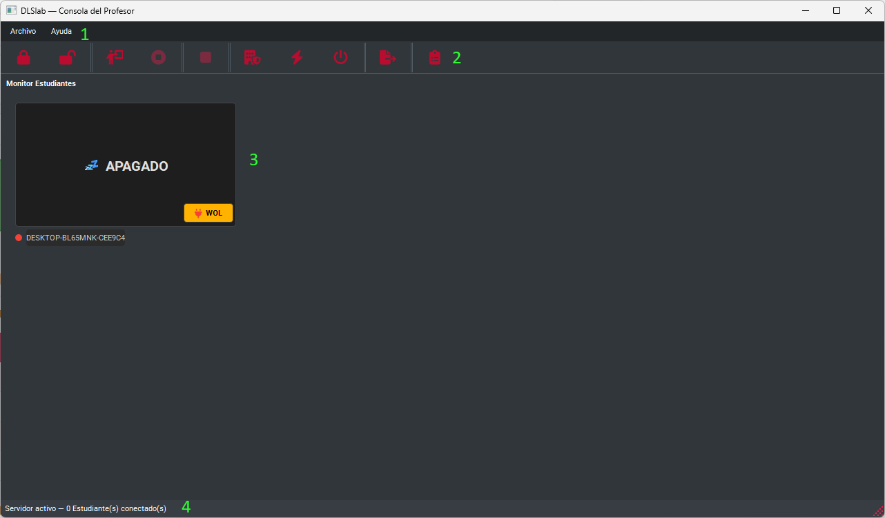
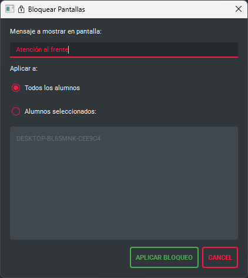
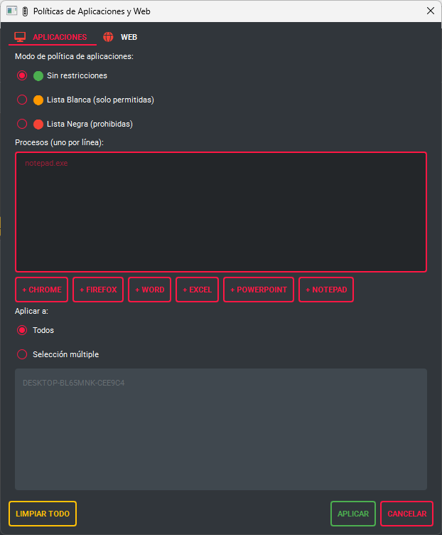
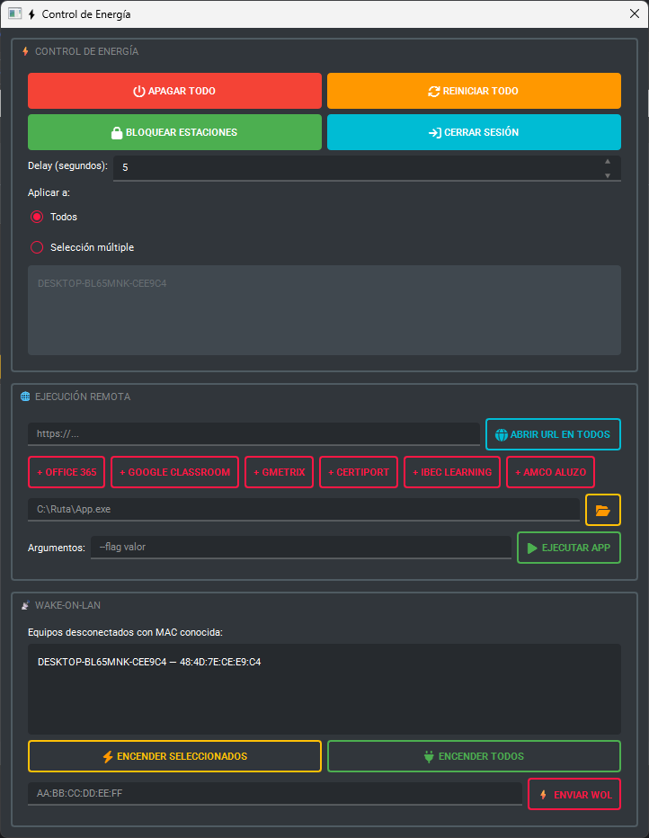
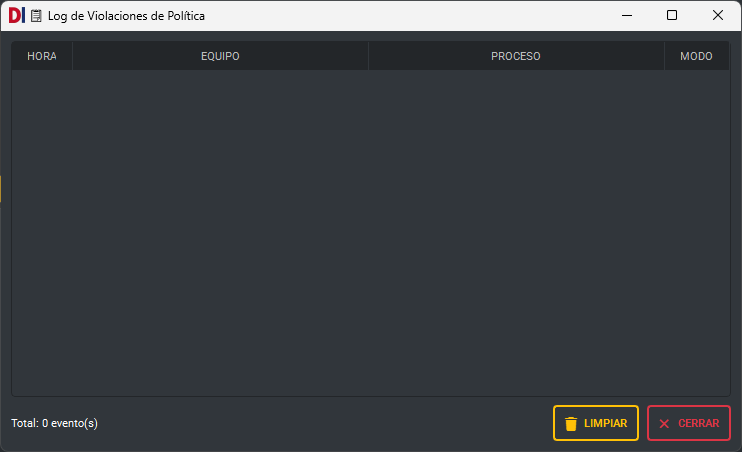

🖥️ DLSlab — Consola del Profesor
Manual de usuario · Versión 1.0
¿Qué es DLSlab?
DLSlab es un sistema de gestión de laboratorios informáticos diseñado para profesores y técnicos de TI en entornos educativos. Permite supervisar en tiempo real las pantallas de todos los estudiantes conectados a la red local, tomar control remoto de cualquier equipo, transmitir la pantalla del profesor, aplicar restricciones de aplicaciones y navegación web, y gestionar el encendido y apagado de todo el laboratorio desde un único punto de control.
La Consola del Profesor (DLSlab_Server.exe) es la
aplicación que se instala en el equipo del docente. Los equipos de los estudiantes
ejecutan el Agente (DLSlab_Agent.exe), que se conecta
automáticamente al servidor.
| Componente | Equipo | Archivo |
|---|---|---|
| Consola del Profesor (Servidor) | PC del docente | DLSlab_Server.exe |
| Agente del Estudiante | Cada PC del laboratorio | DLSlab_Agent.exe |
Guía de inicio rápido
1. Instalar la Consola del Profesor
- Ejecuta
DLSlab_Server_Setup_v1.0.execomo Administrador. - Sigue el asistente de instalación. Se creará automáticamente una regla de Firewall de Windows para el puerto TCP 9000.
- Al finalizar encontrarás el acceso directo DLSlab Server en tu Escritorio y en el Menú de Inicio.
2. Instalar el Agente en los equipos de los estudiantes
Consulta la Guía del Agente (ayuda_agente.html) para
las instrucciones de instalación en los PCs del laboratorio.
3. Iniciar la sesión
- Abre DLSlab Server desde tu Escritorio o Menú de Inicio.
- La barra de estado inferior mostrará: "Servidor activo — 0 Estudiante(s) conectado(s)".
- Cuando los estudiantes enciendan sus equipos (o inicien sesión), sus miniaturas aparecerán automáticamente en la cuadrícula central.
- ¡Listo! Ya puedes supervisar y controlar el laboratorio.
Interfaz principal
La ventana principal de DLSlab tiene tres áreas:
| Área | Descripción |
|---|---|
| 1- Barra de menús | Acceso a Archivo (temas) y Ayuda. |
| 2- Barra de herramientas | Botones de acción rápida para las funciones principales. |
| 3- Cuadrícula de miniaturas | Vista en tiempo real de la pantalla de cada estudiante conectado. |
| 4- Barra de estado | Muestra el número de estudiantes conectados y el estado del servidor. |

Barra de herramientas — referencia rápida
Monitor de estudiantes
La cuadrícula central muestra una miniatura en tiempo real (actualizada cada 2 segundos) de la pantalla de cada estudiante conectado. El nombre del equipo aparece debajo de cada miniatura.
Indicadores visuales en las miniaturas
| Indicador | Significado |
|---|---|
| ● Verde (punto) | Estudiante conectado y activo. |
| ● Rojo (punto) | Estudiante desconectado o apagado. |
| 🔒 Bloqueado | La pantalla del estudiante está bloqueada. |
| 📡 EN VIVO | El estudiante está recibiendo la pantalla del profesor. |
| 🎤 PRESENTANDO | Este estudiante está presentando su pantalla a la clase. |
| 👁️ VIENDO | Este estudiante está viendo la presentación de un compañero. |
| 🟢 APP | Política de apps activa: Lista Blanca (solo apps permitidas). |
| 🔴 APP | Política de apps activa: Lista Negra (apps prohibidas). |
| 🚫 WEB | Navegación web bloqueada o con restricción activa. |
| ✅ WEB | Lista blanca de URLs activa. |
Menú contextual (clic derecho sobre miniatura)
- Bloquear pantalla — Bloquea solo ese equipo.
- Desbloquear pantalla — Quita el bloqueo de ese equipo.
- Presentar pantalla — Muestra la pantalla de ese estudiante a toda la clase.
- Control remoto — Toma el control del teclado y ratón de ese equipo.
- Enviar archivo — Envía un documento directamente a ese estudiante.
- Wake-on-LAN — Enciende el equipo si está apagado (requiere MAC registrada).
Bloqueo de pantallas
Esta función muestra una superposición de pantalla negra en los equipos seleccionados, impidiendo que los estudiantes interactúen con sus equipos. Útil para captar la atención o durante evaluaciones.
Bloquear pantallas
- Haz clic en el botón 🔒 Bloquear pantalla en la barra de herramientas.
- Elige si aplicar a Todos o a una selección de estudiantes.
- Escribe un mensaje opcional que verán los estudiantes (ej. "Atención a la pizarra").
- Haz clic en Aplicar. Las miniaturas mostrarán el ícono 🔒.

Desbloquear pantallas
- Desbloquear todo: Botón 🔓 en la barra de herramientas → desbloquea todos los equipos bloqueados a la vez.
- Desbloquear uno: Clic derecho en la miniatura del estudiante → Desbloquear pantalla.
Transmisión de pantalla
Mostrar mi pantalla a los estudiantes
Transmite en tiempo real la pantalla del profesor a los equipos seleccionados.
- Haz clic en 📡 Transmitir mi pantalla en la barra de herramientas.
- Selecciona los estudiantes destinatarios (todos o una selección).
- Ajusta los parámetros: FPS (cuadros por segundo) y Calidad JPEG.
- Haz clic en Iniciar. El indicador 🔴 EN VIVO aparecerá en la barra.
- Para detener, haz clic en ⏹️ Detener transmisión.
Mostrar la pantalla de un estudiante a la clase
Presenta el trabajo de un alumno en los demás equipos del laboratorio.
- Haz clic derecho sobre la miniatura del estudiante que presentará.
- Selecciona Presentar pantalla.
- La miniatura del presentador mostrará 🎤 PRESENTANDO y las de los demás 👁️ VIENDO.
- Para detener, haz clic en ⏹ Detener presentación en la barra.
Control remoto
Permite al profesor tomar el control completo del teclado y ratón de un equipo estudiante sin desplazarse físicamente. Útil para asistencia técnica o demostraciones individualizadas.
- Haz clic derecho sobre la miniatura del estudiante.
- Selecciona Control remoto.
- Se abrirá una ventana con la pantalla del estudiante en alta resolución.
- Mueve el ratón y escribe normalmente — los eventos se envían al equipo del estudiante.
- Cierra la ventana de control remoto para liberar el equipo.
Políticas de aplicaciones y web
Permiten restringir qué aplicaciones pueden ejecutar los estudiantes y qué sitios web pueden visitar durante la clase.
Abrir el diálogo de políticas
Haz clic en 🛡️ Políticas en la barra de herramientas.

Pestaña Aplicaciones
| Modo | Comportamiento |
|---|---|
| Sin restricciones | Los estudiantes pueden usar cualquier aplicación. |
| Lista Blanca | Solo las aplicaciones listadas están permitidas. El resto se cierra automáticamente. |
| Lista Negra | Las aplicaciones listadas están prohibidas. Se cierran automáticamente si se abren. |
Escribe los nombres de proceso (chrome.exe, notepad.exe) o
usa los botones de acceso rápido (Chrome, Firefox, Word, Excel, etc.).
Pestaña Web
| Modo | Comportamiento |
|---|---|
| Sin restricciones | Navegación libre. |
| Bloquear toda navegación | Ningún sitio web es accesible. |
| Solo URLs permitidas | Solo los sitios listados son accesibles. El resto queda bloqueado. |
Ingresa las URLs completas o usa los accesos rápidos (Google Classroom, Office 365, etc.).
hosts del sistema. El agente
debe ejecutarse con permisos de Administrador para que esta función
opere correctamente.
Aplicar a todos o a una selección
Usa el selector Todos / Selección múltiple para aplicar la política globalmente o solo a ciertos equipos. Mantén Ctrl para seleccionar múltiples estudiantes.
Limpiar todas las políticas
Haz clic en Limpiar Todo para eliminar todas las restricciones activas de aplicaciones y web en todos los equipos.
Control de energía
Haz clic en ⚡ Energía en la barra de herramientas para abrir el diálogo de control de energía.

| Acción | Descripción |
|---|---|
| Apagar Todo 🔴 | Inicia el apagado de los equipos seleccionados tras el delay configurado. |
| Reiniciar Todo 🟠 | Reinicia los equipos seleccionados tras el delay. |
| Bloquear Estaciones 🟢 | Ejecuta "Bloquear estación de trabajo" en Windows (pantalla de bloqueo del SO). |
| Cerrar Sesión | Cierra la sesión del usuario activo en los equipos seleccionados. |
El campo Delay (segundos) (por defecto: 5 s) define cuánto tiempo tienen los estudiantes para guardar su trabajo antes de que se ejecute la acción.
Apagado de emergencia rápido
El botón ⏻ de la barra de herramientas apaga todo el laboratorio directamente (con un paso de confirmación) con un delay de 5 segundos.
Ejecución remota
Desde el diálogo de ⚡ Energía, en la sección 🌐 Ejecución Remota, puedes:
Abrir URL en los equipos de los estudiantes
- Escribe la URL en el campo de texto o usa un acceso rápido (Office 365, Google Classroom, Gmetrix, Certiport, etc.).
- Haz clic en Abrir URL en todos.
Ejecutar una aplicación en los equipos
- Escribe la ruta completa del ejecutable o haz clic en 📂 para buscarlo.
- Añade argumentos si la aplicación los requiere (campo Argumentos).
- Haz clic en Ejecutar App.
C:\Program Files\VLC\vlc.exe.
Wake-on-LAN
Permite encender remotamente equipos apagados, siempre que tengan Wake-on-LAN habilitado en la BIOS/UEFI y en la tarjeta de red.
Encender equipos desde el diálogo de Energía
La sección 📡 Wake-on-LAN muestra los equipos desconectados con MAC registrada. Selecciona los que deseas encender y usa:
- Encender seleccionados — Solo los equipos marcados en la lista.
- Encender Todos — Todos los equipos con MAC conocida.
Encender un equipo desde su miniatura
Las miniaturas de equipos desconectados muestran un botón ⚡ WoL. Haz clic para encender ese equipo.
WoL manual por dirección MAC
Si conoces la MAC directamente, introdúcela en el campo AA:BB:CC:DD:EE:FF y haz clic en
⚡ Enviar WoL.
- Wake-on-LAN habilitado en BIOS/UEFI del equipo estudiante.
- WoL habilitado en la tarjeta de red (Administrador de dispositivos → propiedades de la NIC).
- El equipo debe haberse conectado al menos una vez para que el servidor recuerde su MAC.
- Todos los equipos deben estar en el mismo segmento de red (LAN).
Envío de archivos
Envía documentos directamente al Escritorio de los estudiantes sin necesidad de carpetas compartidas o correo electrónico.
Enviar a múltiples estudiantes
- Haz clic en 📤 Enviar archivo en la barra de herramientas.
- Selecciona el archivo (PDF, Word, Excel, PowerPoint, imágenes — máx. 35 MB).
- Elige los estudiantes destinatarios.
- El archivo aparecerá en el Escritorio de cada estudiante seleccionado.
Enviar a un estudiante específico
Haz clic derecho sobre la miniatura del estudiante → Enviar archivo.
Registro de violaciones de política
Cuando un agente detecta que un estudiante intentó abrir una aplicación o sitio web bloqueado, envía un reporte al servidor que queda registrado en el Log de Políticas.
- El ícono 📋 en la barra muestra un badge rojo 🔴 cuando hay eventos sin leer.
- Haz clic en 📋 para abrir la ventana de log.
- El log muestra: equipo, proceso o URL bloqueada, tipo de política y hora.

Procedimientos paso a paso
▶ Iniciar una clase con restricciones web
- Abre DLSlab Server. Espera a que todos los estudiantes se conecten.
- Haz clic en 🛡️ Políticas.
- En la pestaña Web, selecciona Solo URLs permitidas.
- Añade las URLs del examen o práctica (ej.
https://campus.universidad.edu). - Asegúrate de que Aplicar a: Todos esté seleccionado y haz clic en Aplicar.
- Verifica que aparezca el badge ✅ WEB en las miniaturas.
▶ Hacer una presentación del profesor
- Haz clic en 🔒 Bloquear pantalla para que los estudiantes estén atentos.
- Prepara tu presentación o pantalla.
- Haz clic en 📡 Transmitir mi pantalla.
- Selecciona todos los estudiantes y haz clic en Iniciar.
- El indicador 🔴 EN VIVO aparecerá en la barra.
- Al terminar: ⏹️ Detener transmisión → 🔓 Desbloquear.
▶ Finalizar la clase
- Haz clic en 🛡️ Políticas → Limpiar Todo para eliminar restricciones.
- Haz clic en ⚡ Energía → Apagar Todo.
- Confirma el apagado. Los equipos se apagarán en 5 segundos.
- Cierra DLSlab Server con Ctrl+Q o Archivo → Salir.
Preguntas frecuentes
¿Por qué no aparecen estudiantes en la cuadrícula?
- Verifica que los equipos de los estudiantes estén encendidos y con sesión iniciada.
- Confirma que el Agente (
DLSlab_Agent.exe) está ejecutándose en esos equipos. - Asegúrate de que todos los equipos están en la misma red local.
- Verifica que el Firewall del PC del profesor permite el puerto 9000 TCP.
- La barra de estado debe mostrar "Server listening on port 9000" al arrancar.
¿Las restricciones web no funcionan en los equipos?
La política web requiere que el Agente tenga permisos de Administrador. Verifica que la tarea programada de inicio del agente use nivel de ejecución elevado. También asegúrate de que el navegador no use servidores DNS alternativos (DoH).
¿Puedo usar DLSlab con WiFi?
Sí, funciona con WiFi, pero se recomienda red cableada para mejor rendimiento en las transmisiones de pantalla. Wake-on-LAN puede no funcionar en redes WiFi.
¿Cómo cambio el tema de la interfaz?
Menú Archivo → Tema → Claro / Oscuro (atajos: Ctrl+C / Ctrl+O).
¿Puedo controlar solo algunos equipos?
Sí. En todos los diálogos de acción (bloqueo, políticas, energía) puedes elegir Selección múltiple y hacer clic en los equipos específicos que deseas afectar.
¿Qué pasa si el servidor se cierra mientras hay estudiantes conectados?
Los agentes intentan reconectarse automáticamente cada pocos segundos con espera exponencial. Cuando el servidor se reinicia, los agentes se reconectan y vuelven a aparecer en la cuadrícula.
¿El estudiante sabe que está siendo monitoreado?
El Agente aparece como un pequeño ícono en la bandeja del sistema del estudiante. Para cumplir con normativas de privacidad, se recomienda informar a los estudiantes sobre el uso del sistema al inicio del curso.
Solución de problemas
El servidor no arranca / error al iniciar
- Verifica que no haya otra instancia de DLSlab Server abierta.
- Confirma que el puerto 9000 no está ocupado por otra aplicación:
netstat -ano | findstr :9000 - Ejecuta DLSlab Server como Administrador.
Las miniaturas no se actualizan
- Verifica la conexión de red entre el PC del profesor y el laboratorio.
- Comprueba que el agente no esté suspendido o con alta carga de CPU.
El control remoto tiene lag excesivo
- Cierra otras transmisiones activas antes de iniciar el control remoto.
- Verifica el ancho de banda de la red local.
Wake-on-LAN no funciona
- Verifica que WoL esté habilitado en BIOS y en el adaptador de red del equipo.
- Confirma que el equipo se conectó previamente para que el servidor registre su MAC.
- WoL solo funciona en redes cableadas (no WiFi en la mayoría de casos).
Cómo reportar un error
Contacta al soporte técnico indicando:
- Descripción del problema y pasos para reproducirlo.
- Versión de DLSlab (Ayuda → Acerca de).
- Sistema operativo (Windows 10/11) y versión de Python si aplica.
- Capturas de pantalla del error si es posible.
Glosario
| Término | Definición |
|---|---|
| Agente | Programa (DLSlab_Agent.exe) instalado en cada PC del estudiante que se conecta al
servidor.
|
| Servidor | La Consola del Profesor (DLSlab_Server.exe) que recibe conexiones y envía comandos.
|
| Miniatura | Captura de pantalla reducida (320×180 px) que el agente envía cada 2 segundos. |
| Lista Blanca | Lista de elementos permitidos; todo lo que no está en la lista queda bloqueado. |
| Lista Negra | Lista de elementos prohibidos; todo lo que no está en la lista está permitido. |
| Wake-on-LAN (WoL) | Tecnología que permite encender un PC apagado enviando un "paquete mágico" a su dirección MAC por la red. |
| TCP / Puerto 9000 | Protocolo y puerto de comunicación entre el servidor y los agentes. |
| Hosts (archivo) | Archivo del sistema de Windows usado por la política web para bloquear dominios: C:\Windows\System32\drivers\etc\hosts.
|
| LAN | Red de área local — la red del laboratorio a la que están conectados todos los equipos. |
| FPS | Cuadros por segundo en la transmisión de pantalla. Mayor FPS = más fluido pero más ancho de banda. |
| Proceso | Nombre del ejecutable de una aplicación (ej. chrome.exe) usado en políticas de
apps.
|
Atajos y consejos
Atajos de teclado
| Atajo | Acción |
|---|---|
| Ctrl+Q | Cerrar DLSlab Server |
| Ctrl+H | Abrir página de Ayuda |
| Ctrl+C | Aplicar tema Claro |
| Ctrl+O | Aplicar tema Oscuro |
| Ctrl + clic | Selección múltiple en listas de alumnos |
Consejos de uso
- 🔴 Usa el apagado de emergencia de la barra solo para situaciones urgentes; prefiere el diálogo de Energía para mayor control.
- 📝 Configura las políticas antes de que los estudiantes comiencen a trabajar.
- 🎯 Usa selección múltiple para aplicar acciones a grupos específicos (ej. solo los que terminaron).
- 💾 Los equipos recordados vía WoL persisten entre sesiones: sus MACs se almacenan automáticamente.
- 🖥️ Puedes ampliar la miniatura de un estudiante haciendo doble clic sobre ella para ver mejor su pantalla.
- ⚡ Los accesos rápidos de URLs en Ejecución Remota (Office 365, Google Classroom, etc.) se pueden usar para abrir la plataforma del curso con un solo clic.
Información de soporte
Si necesitas ayuda adicional, nuestro equipo está disponible para asistirte:
| Canal | Contacto |
|---|---|
| 📧 Correo electrónico | ayuda@dls-lab.com |
Al contactarnos, incluye:
- Versión de DLSlab (ver en Ayuda → Acerca de).
- Descripción detallada del problema.
- Capturas de pantalla si aplica.